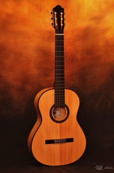

Canal Winchester Performing Arts
Building a Community of Life-Long Artists
Winchester Guitar Ensemble
------------------------------------------------------------------------------------
Our Guitar Ensemble is unique for a High School Music Department.
The ensemble is open to all students at Canal Winchester High School. The Department is committed to creating excellence in Music Education using the Academic Content Standards laid down by the Ohio Department of Education.
All parents are encouraged to attend our CW Performing Arts Boosters meetings the Second Monday of each month at 7:00pm in CWHS Cafetorium.
For a complete listing of Department performances and rehearsal schedules, click: Performing Arts Calendar
